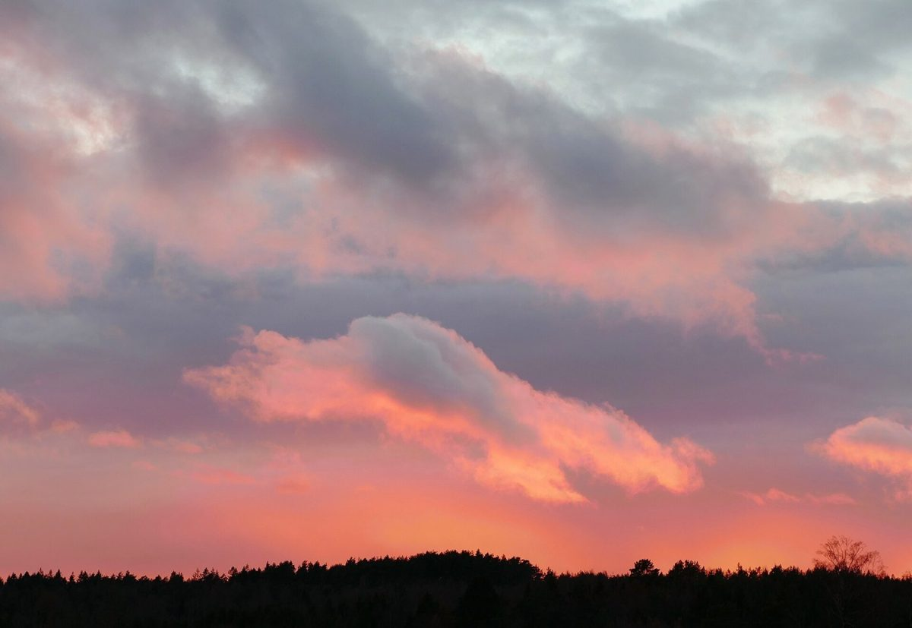

ABOUT
みんなで創り育てる、広田町の場所
「Café 彩葉」は、広田町の古民家を改装して2018年6月3日にオープンしたカフェです。もとは学生の宿泊場所として借りていた古民家で、地元の方々や多くの支援者の協力でカフェになったと紹介されています。
お店が目指すのは「広田町をもっと好きになれる空間」。訪れる一人ひとりの豊かな表情や、季節ごとに変わる葉の色によって、お店も町ももっと彩り豊かになっていく。そんな、みんなで創り育てていく場所だそうです。
店名の意味・由来は、確認できた範囲では明記されていません。このページの「彩」と「葉」にちなんだ色づかいは、制作側のイメージです。


写真はすべてフリー素材のイメージです。広田町や実際のお店の写真ではありません。
MENU
朝明けと夕暮れの、二つのブレンド
公式サイトによると、ドリンクは「彩葉ブレンド」コーヒーの2種類(HOT/ICED)。水曜限定の手作り日替わりランチもあるそうです。価格・詳細は 準備中

朝明け
軽やかで飲みやすい、一日の始まりのブレンド。

夕暮れ
まろやかでコクのある、ほっと一息のブレンド。

日替わりいろはランチ
水曜限定の手作りランチ。数量限定で予約が必要とのこと。
メニューは公式サイトの記載をもとにした紹介です。最新の内容はお店のInstagram等でご確認ください。
VOICE
口コミ(イメージ例)
以下は制作側が作成した創作のイメージ例で、実在の方の声ではありません。
イメージ例
窓の外の緑を眺めながら、ゆっくりコーヒーを飲めました。時間の流れがやさしい場所です。
イメージ例
古い家のぬくもりが残っていて、初めてなのに落ち着きました。また季節を変えて来たいです。
イメージ例
朝明けと夕暮れ、名前を聞くだけで飲み比べたくなります。次は両方試したいです。
ACCESS
アクセス・ご案内
| 所在地 | 〒029-2208 岩手県陸前高田市広田町久保230-5 |
|---|---|
| 電話 | 準備中 |
| 営業時間 | 準備中 |
| 定休日 | 準備中 |
| SNS | Instagram @iroha_hirota |